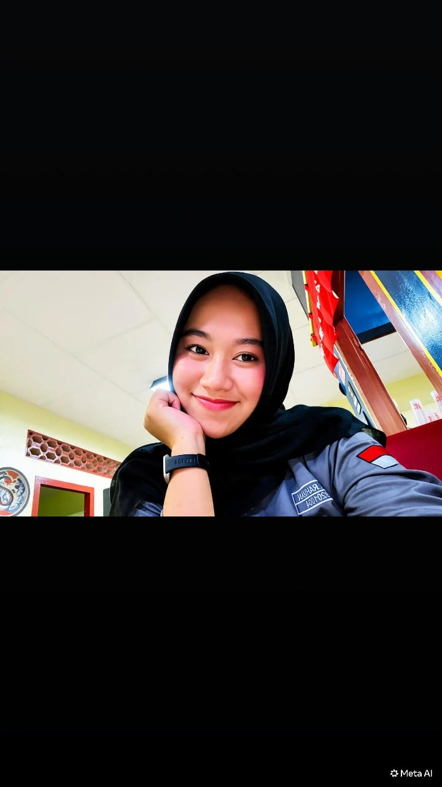

Nama: Jesika Rahman
Nama Panggilan: Jesss
Tempat, Tanggal Lahir: LN, 26 Juni 2026
Alamat: Desa Air Mesu
Status: Mahasiswa
Program Studi: Sistem dan Teknologi Informasi
Hobi: Gibah
Cita-cita: Orang Kaya 💸
E-mail: jesikauy@gmail.com
Tingok Lah Bes!